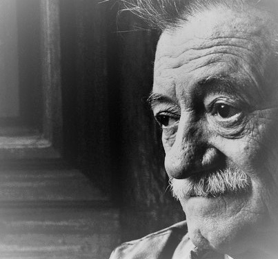

Mario Benedetti
Mario Benedetti, excelente escritor, novelista y periodista que centró su carrera en la literatura y se convirtió en el personaje más importante para su país Uruguay, con una gran producción literaria, en la segunda mitad del siglo XX.
Desarrolló varias facetas y se convirtió en un personaje de gran relevancia, que realizo trabajos como novelista, dramaturgo, cuentista, critico, periodista y el más fundamental, un excelente escritor.
Libros
-
La tregua
Este libro refleja el espíritu romántico y filosófico del autor. Está escrita como si fuera el diario d el protagonista, Martín Santomé, y retrata la vida de un empleado a punto jubilarse, viudo, en el Montevideo de finales de los 50.
-
Vivir adrede
Todo es adrede, todo hace trizas el alma. ¿Nos traicionan nuestras propias huellas? ¿Qué diferencia hay entre un suicida inevitable y uno vocacional? A través de planteamientos como éstos, Vivir adrede reflexiona sobre la vida.
-
Gracias por el fuego
Pieza fundamental de la narrativa de Mario Benedetti, GRACIAS POR EL FUEGO novela una historia de frustraciones: la frustración de un asesinato y una frustración personal que es a la vez reflejo de la frustración general en que se mueve un país.
-
El amor, las mujeres y la vida
Este libro reúne los mejores poemas de amor de Mario Benedetti. Muchos de ellos están a flor de labio en la gente, que los recuerda de memoria o los tiene en mente a la hora de garabetear un verso; otros se han convertido en canciones y hasta en graffitis.
Frases
- Cuando creíamos que teníamos todas las respuestas, de pronto, cambiaron todas las preguntas
- La mariposa recordará por siempre que fue gusano
- Después de todo, la muerte es solo un síntoma de que hubo vida
- Hay pocas cosas tan ensordecedoras como el silencio
- La incertidumbre es una margarita cuyos pétalos no se terminan jamás de deshojar